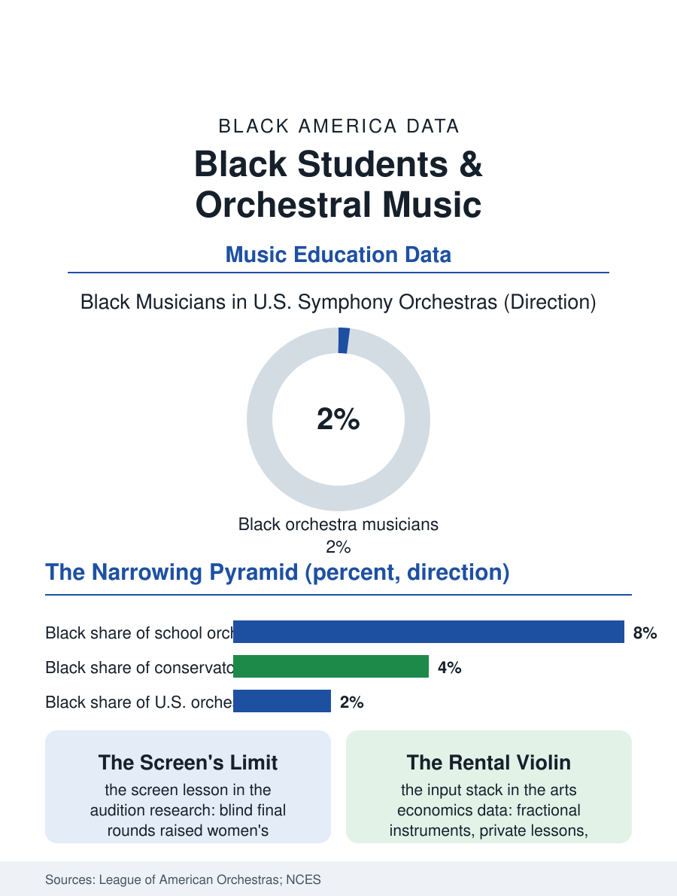

Black Education
The Strings File: Black Students and the Orchestra
Black musicians are under two percent of U.S. orchestra rosters, the integral of a pipeline that begins with a rented quarter-size violin. The strings file.

If the marching band is Black America's great musical institution, the orchestra is its most complicated room: the ensemble where the classical canon sits in judgment, where Black students hold some of the smallest participation shares in all of school music, and where the professional summit, the American symphony orchestra, counts Black musicians at under two percent of its rosters. This article reads the strings file, from the elementary violin class to the orchestra's audition screen.
The Instrument Economics
The strings pipeline runs on private infrastructure. Orchestral training conventionally begins early, on fractional-sized instruments rented or bought, and matures through private lessons, youth orchestra tuition, and summer programs, an input stack whose cost the arts economics literature prices in the thousands per year at the serious levels. School orchestra programs, the public on-ramp, are the least evenly distributed of the school ensembles in the federal arts data, concentrated in affluent suburbs and magnet schools, so the Black student's orchestra access is a compound of school geography and household budget before talent is ever auditioned. The instrument loan programs that democratized band, the school-owned horn a beginner can take home, exist for strings too but at thinner scale, and the repertoire's cultural center, the European canon, presents a second-order barrier the music education literature debates honestly: not an exclusion of welcome so much as an absence of reflection, in a field where the composers on the stand include few who look like the students the programs hope to recruit, though the programming data show that changing as orchestras commission and revive Black composers at measurable, if still modest, rates.
The Audition and the Screen
Professional orchestras conduct their auditions behind a screen, the famous reform whose effects economists studied and the field cites as proof that evaluated blind, the sorting changes, and the screen's history is instructive for this file: it raised women's representation substantially while Black representation barely moved, because the screen governs only the final round of a tournament whose earlier rounds, the training decades and the conservatory admissions and the festival circuits, sort long before any screen is hung. The conservatory data make the point numerically: Black students are a small fraction of enrollment at the elite music schools whose graduates fill orchestra rosters, and the youth orchestra tier beneath them shows the same distribution, which is the pipeline's arithmetic, not the audition's. The interventions that have moved the numbers are, by now, this atlas's familiar cast: intensive community programs modeled on El Sistema that place instruments, teachers, and ensembles inside Black neighborhoods at no cost, several of them in this country now old enough to be placing graduates in conservatories; fellowship programs at major orchestras that fund the post-conservatory years for Black and Latino musicians; and instrument banks that treat the fractional violin as infrastructure. Their results are real and small, because their scale is small, and the file records both facts without flinching.
The Counter-Tradition
The strings file must also record what the orchestral frame excludes. Black string playing has a continuous history that the canon conversation forgets: the string bands of the nineteenth century, the society orchestras, the jazz violinists and the arrangers whose string writing defined the sound of Black popular music across the twentieth century, and the present generation of Black string players who built careers across the classical, jazz, and popular worlds without waiting for the orchestra's door. The school file's healthiest trend may be the boundary's erosion: string programs incorporating improvisation and Black composers, quartets of Black musicians packing school auditoriums on tour, and students meeting the violin as an instrument their own culture has long played, rather than as a passport to someone else's. The orchestra file closes with the summit's number, under two percent, and the pipeline mathematics that produce it. A summit that small cannot be explained at the summit; it is the integral of every earlier room, the rented quarter-size violin, the school that offers strings, the teacher who recruits at the elementary assembly, the family that can fund the lessons. The screens at the end are honest. The file's argument is that honesty must begin at the beginning, where the cheapest instruments in music, small violins for small children, decide more of the outcome than any audition committee ever will.
More in Black Education
Black Educational Attainment: High School Parity, the College Gap
About 89 percent of Black adults hold a high school diploma and one in four holds a bachelor's degree or higher — the attainment ladder, the college completion gap, and the generational trend.
Historically Black Colleges and Universities: Enrollment and Degrees
More than 100 HBCUs enroll roughly 290,000 students and award about one in six Black bachelor's degrees — an outsized share from a small sector. The federal education data.
Black College Enrollment: 2.4 Million Students
About 2.4 million Black students are enrolled in American colleges — nearly two-thirds of them women. The NCES enrollment data by sector, level, and trend.
Source: League of American Orchestras demographic reports; National Center for Education Statistics arts access data; music education research.